Here you can find a list of projects I'm working on for my Multimedia Studio
Quick Jump to various projects
These are the screenshots of my local files, I did the majority of the scenarios locally off my own machine and transfered everything for this site onto the university computers. So the resources for individual projects were local.
Local Files
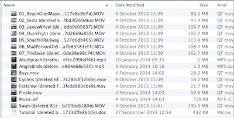Files for Holiday video
Files for Maya Planet
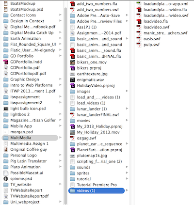Files for Load Video with Button
Files on Unix Server
Adobe Premiere Pro
This is the Holiday video I created in Adobe Premiere Pro using video and audio clips provided to me by the lecturer
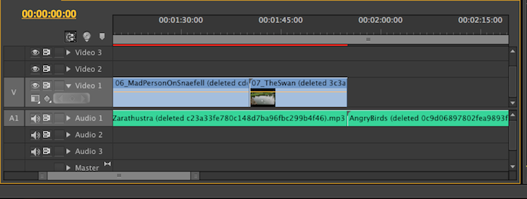 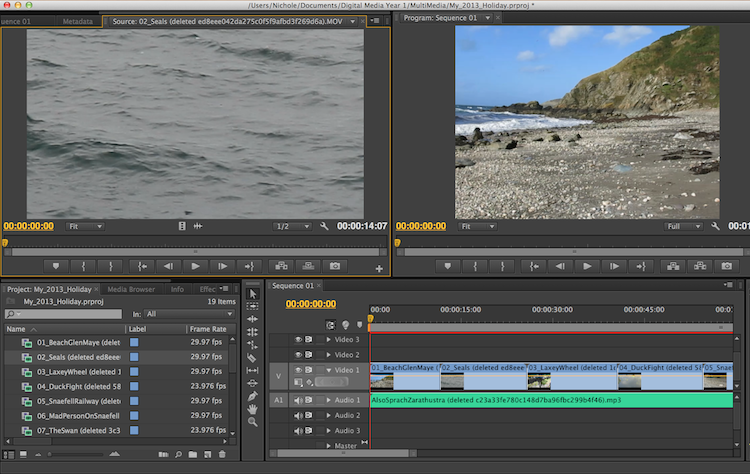 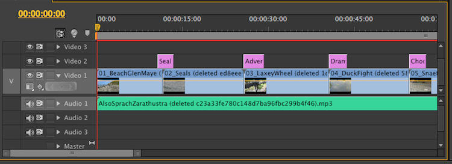Editing the video was fairly straight forward. I imported in the various clips required along with the audio that was provided. I had a listen to the audio and decided to choose the most dramatic and edit the video clips to match the music as best as I could. Then all that was left was adding in the titles, I had never done this before, since I'd never really used Premiere Pro, so it was fun and I wasn't too serious about the titles, hence 'Dramatic Ducks'. I could've looked more into the various fonts and colours I could've used to make it look more professional though. If I were to redo it, that would be what I would change.
Below is the final video posted to Youtube.
Maya Planet
For my animation of a planet of my choice, I chose to stick with what I knew and make an animation of Earth.
I started off with a polygon sphere for the base of the planet.
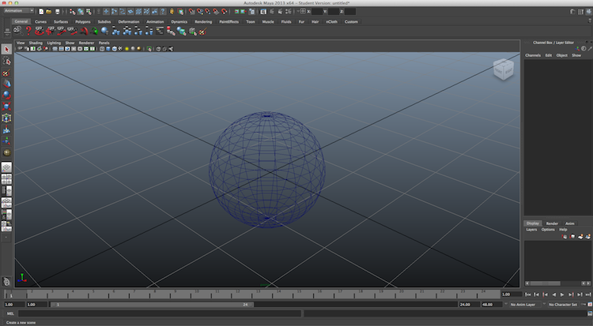Next I added on a lambert texture for the base material, it's a nice matte texture so the texture map won't be shiny when a light hits it.
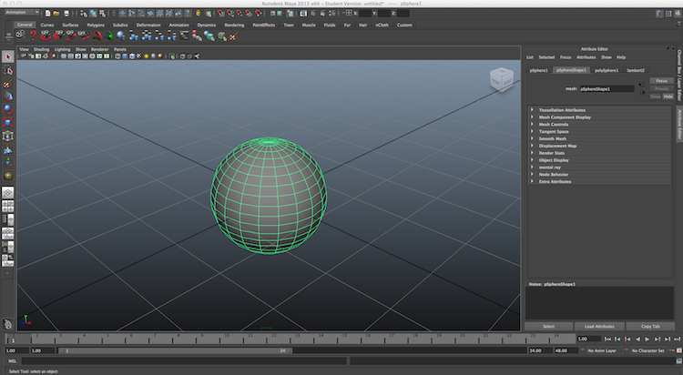After applying the lambert material, I added on the earth texture that was provided to us.
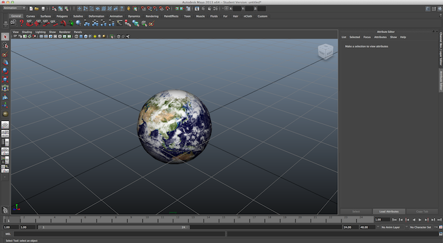To make it look like an actual planet, lighting was added with a directional light, representing the Sun's light. Knowing next to nothing about degrees at which the sun's light hits the Earth, I just placed where I thought looked best.
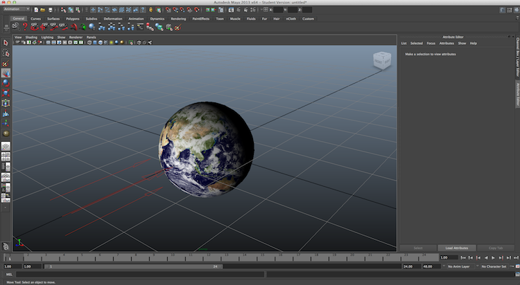Linear tangents were implemented to keep the Earth from starting off at a slower speed, and also to keep it from decreasing nearer the end of the rotation. This just kept it with a smooth rotation. I also had a small problem with my planet rotating unusually fast, this was solved by adjusting the full rotation, by adjusting the playback speed to real-time.

The final step in making the animation look like a planet is to add in the axis tilt. So I adjusted the Z axis tilt to 22.5 degrees and below is what it looks like in the viewport so it can be seen from all angles.
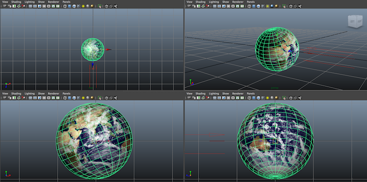The final render of the planet is seen below
Working with Adobe Premiere Pro
When importing the 720 still frames into Adobe Premiere Pro, along with the enigmatic.wav soundtrack given to us by our lecturer, I am able to create a short film animation of the earth's rotation.
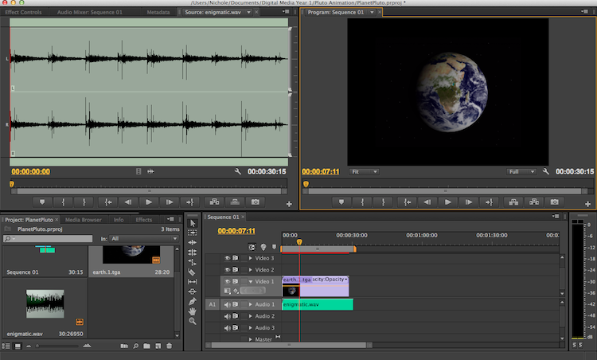The Maya Planet Animation project went rather smoothly, the only issues I had were to do with the speed of the rotation, since I wasn't aware at first that there was a playback speed, I kept adjusting the Y rotation for the final frame, which was wrong. It gave me a good first step into Maya which has allowed me to progress and work with various other 3D applications to create my own animations and models.
Pro Tools
I don't have any screenshots of my progress for working with Pro Tools since it was all conducted on the university computers, however, I can say that there was definitely a learning curve for it. Pro Tools has such a different layout to any other program I'd used before, and I'm not musical in the slightest, so when it came to putting down some tunes for the Hero Video Scenario below, it felt like I was hitting random keys. I did make use of the tune that was in the first tutorial video provided to us by our lecturer, then I jumped off and tried out my own stuff and tried different instruments/sounds in Xpand2. It felt a bit awkward to use at first but my experience in Premiere Pro did help me settle into Pro Tools and I found it to be rather fun!
Adobe Flash
Load Video with Button
I had never even opened Flash before this project. So starting these Flash projects, I didn't even know where to go, thankfull ActionScript is similar to JavaScript. This project was one of the later ones, the previous was just a Load Video, without the button. One of the main issues I had was the fact I didn't realise I needed the video the button was loading to be in the same folder as the .swf, once I realised this, it was almost smooth sailing. It wasn't asked of us but I really wanted to add in a pause or stop button since, all the buttons work, but once you click on one, it plays, and if you click on another, that one then plays another video ontop of the first video selected. I spent hours trying to figure it out. I know perfectly well how to use a button to stop audio or an imported movie, but I still don't know how to use one to stop an external .swf movie. That is something I would like to improve on. Below is the finished scenario.